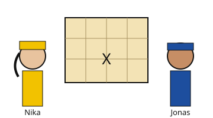
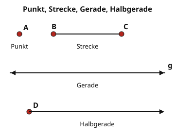
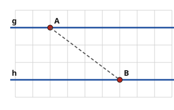
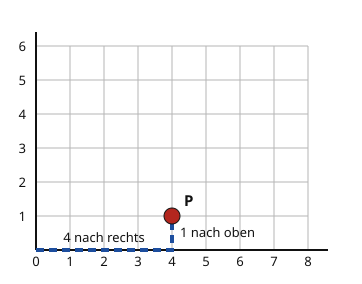
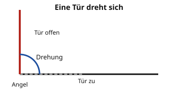
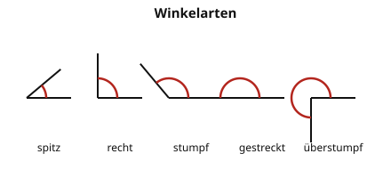
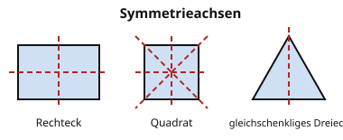
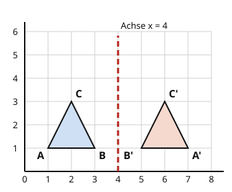
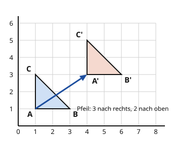

Medienübersicht
Alle Bilder, Audios und Videos dieser App mit ihrer Quelle und ihrer Lizenz.
Bilder

images/zahlenstrahl.svg© CC-BY-4.0Verwendet auf: Das brauchst du hier

images/szene-schatzkarte.svg© CC-BY-4.0Verwendet auf: Punkt, Strecke, Gerade

images/linien-arten.svg© CC-BY-4.0Verwendet auf: Punkt, Strecke, Gerade

images/abstand.svg© CC-BY-4.0Verwendet auf: Parallelen, Senkrechten und Abstand

images/spielbrett-schiff.svg© CC-BY-4.0Verwendet auf: Koordinatensystem

images/spielbrett-beispiel.svg© CC-BY-4.0Verwendet auf: Koordinatensystem

images/spielbrett-punkte.svg© CC-BY-4.0Verwendet auf: Koordinatensystem

images/grundfiguren.svg© CC-BY-4.0Verwendet auf: Ebene Grundfiguren

images/tuer-drehung.svg© CC-BY-4.0Verwendet auf: Winkel messen und zeichnen

images/winkelarten.svg© CC-BY-4.0Verwendet auf: Winkel messen und zeichnen

images/dreieck-konstruktion.svg© CC-BY-4.0Verwendet auf: Zeichnen und Konstruieren

images/symmetrie-beispiele.svg© CC-BY-4.0Verwendet auf: Symmetrie

images/spiegeln-beispiel.svg© CC-BY-4.0Verwendet auf: Spiegeln

images/verschieben-beispiel.svg© CC-BY-4.0Verwendet auf: Verschieben und Drehen

images/drehen-beispiel.svg© CC-BY-4.0Verwendet auf: Verschieben und Drehen